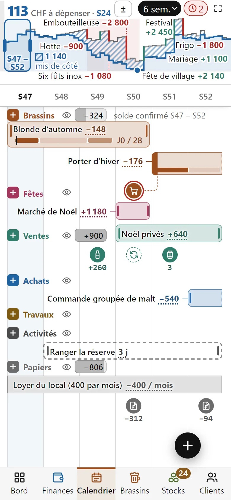
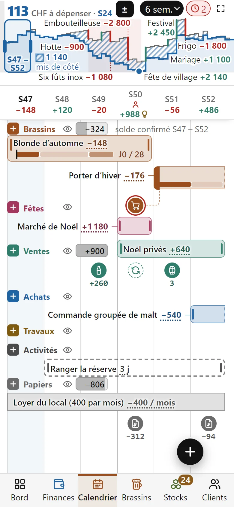
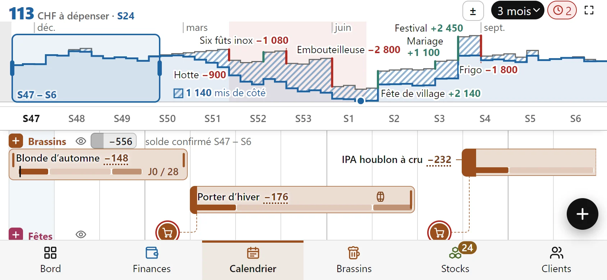
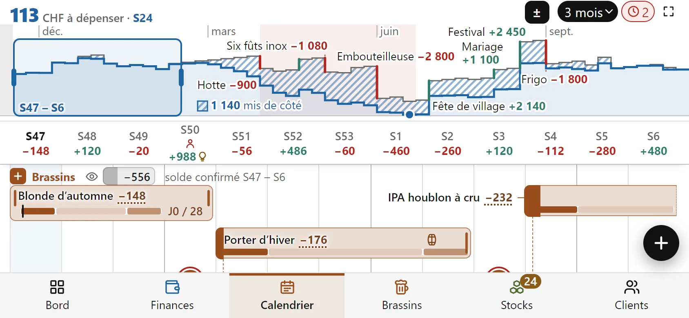

Calendrier : en-tête corrigé
« C'était mieux, beaucoup mieux avant sur le graph, je veux juste les dates… Ces chiffres aléatoire m'apporte rien, je veux juste la semaine, et les +/- que je puisse afficher avec un bouton, pareil pour les petites icônes »
À regarderTa phrase d'hier visait la bande, et j'avais vidé la courbe. La courbe de z2 est revenue avec tous ses noms et montants. La bande ne montre que la semaine. Le bouton ± affiche les + et − et les icônes. Dis si le ± est bien placé.
Portrait


Paysage


Refusé : la version sobre

Encore ouvert
- Paysage : la frise commence à 182 px sur 390. Ta plainte « trop peu de place pour la frise » tient toujours.
- Paysage : 8 semaines lisibles d'un coup ; la règle d'origine en voulait 10 au moins.